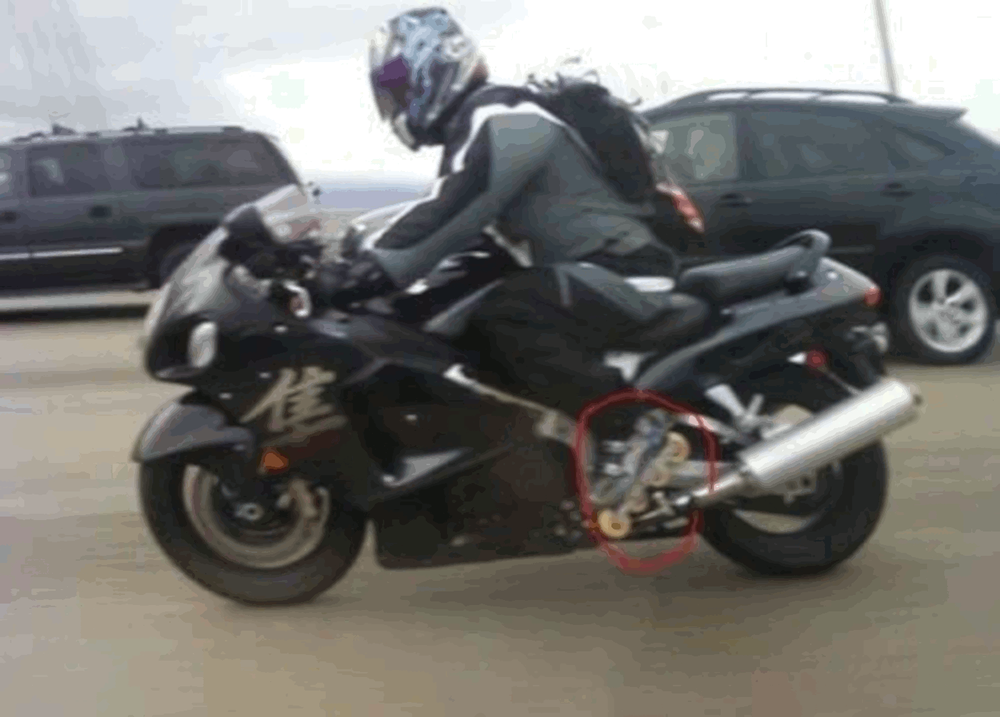
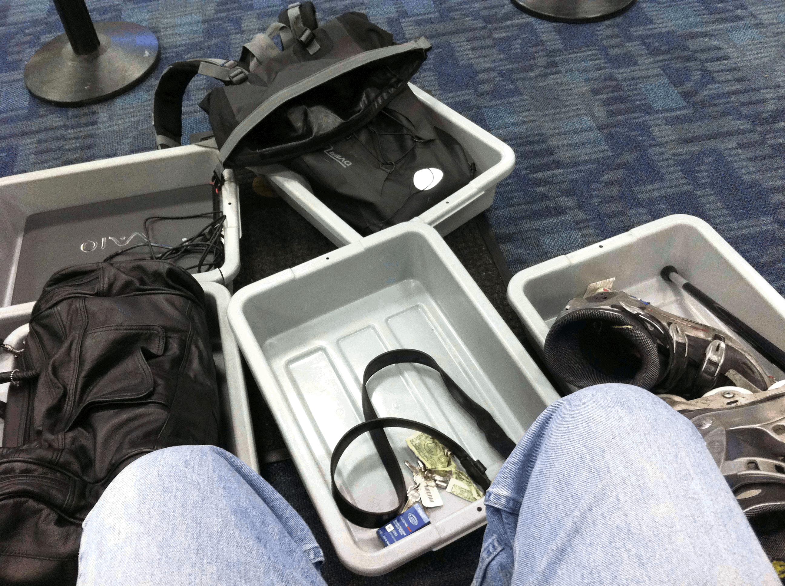

DEIA[1] Certified to Ride a Motorcycle with Skates
by Troy Wilkes

Figure 1 Riding across the San Francisco Bay Bridge with inline skates on a Hayabusa in 2009
Introduction
The Americans with Disabilities Act (ADA) is a federal law that prohibits discrimination against individuals with disabilities in various areas of life, including employment (Title I), government services and programs (Title II), public accommodations and commercial facilities (Title III), and miscellaneous provisions (Title V). However, despite these legal protections, individuals with disabilities continue to face systemic discrimination in many aspects of their lives.
One example of this discrimination can be seen in the treatment of individuals who use non-traditional mobility aids, such as inline skates, to navigate their environment. Even though these aids may be necessary for individuals with a ballistic mobility impairment[2], they are often stigmatized and not recognized as valid accommodations under the ADA. This has resulted in me being denied access to employment (AirBnB), government services and programs (Public Transportation), public accommodations (Airlines, Housing, Shopping, Workout, …), and receiving coerced or threatening behavior (Public Transportation, San Mateo Police Department, CA-DMV, Government, …).
This essay is the public exploration of the issues of systemic discrimination across ADA Titles I, II, III, and V, specifically as it relates to individuals who use inline skates as a mobility aid, such as myself. I will demonstrate how this systemic discrimination has forced me to actively pursue civil disobedience to affect change in these instances.
History
In 1991, I dawned inline skates and immediately knew that my ability to ambulate was dramatically increased, while reducing pain and set forth in a scientific experiment. For over 10-years, I would enter a business establishment where they would say you are not allowed, and I would mimic the walking motion with skates as shoes. Businesses either let me in or did not know how to interpret this, whereby if they denied me, I took my business elsewhere. During this time, I was a prolific skater on a regional recreation area, Coyote Point, developing my skating double push technique.
In 1997, I obtained a handicap plate on a motorcycle, because I had lost 2-jobs having to park and walk distances that were too far. This allowed me to park close enough to walk into work. Shortly thereafter, I sold my car with a manual transmission for an automatic transmission, because the process of pushing the clutch in caused too much pain. Also, at this time, I moved to apartments that were on the 1st floor or had elevator access. My condition had worsened, and I started living near CalTrain in anticipation of gaining access with my mobility aid to establish my climate duty to reduce carbon emissions by utilizing skates and public transportation.
CalTrain and other public transit entities continued to refuse service to me using inline skates as a mobility aid. That led to me learning to ride a motorcycle with skates to get to jobs, since public transportation was not viable, and they provided no reasonable accommodation. My mantra became:
In 2004, I found it necessary to use Civil Disobedience #1 to get my case heard. I notified CalTrain that I was going to board with my inline skates, where I was trying to get them to comply. They started case 904405, against using inline skates on public transportation, where I was found innocent. Shortly thereafter, I filmed this incident with CalTrain showing their rampant disregard for the disabled[3].
In 2005, I petitioned the San Francisco International Airport (SFO) to allow me to use inline skates as a mobility aid to ambulate around for flights[4]. This proved to be very advantageous, because on one flight transfer in Greensboro, I was able to skate through the airport faster than others using a golf cart to catch my next flight.
In 2006, I submitted an ADA complaint to the US Department of Justice (US-DOJ), where they mandated the US Department of Transportation Federal Transit Administration (US-DOT-FTA) provide a reasonable accommodation for non-access[5]. It was not until March of 2007, when BART was forced to provide paratransit[6].
In 2009, a SMPD Officer Sgt Collum pulled me over for a traffic infraction and asked about my usage of skates on a motorcycle. He accepted my explanation and allowed me to proceed riding with skates after writing a citation for a different traffic infraction. There are numerous other incidents with Police Departments and CHP, when facing my mobility aid where they complied with ADA laws.
At this point in 2010, 27 years after my injury, I found the Doctor who identified Hip Impingement Syndrome in my left hip joint. Up to this point, no one had identified bone spurs on my hip joint and there was no definitive proof, just my observations of acute and chronic pains. I had surgery, which helped but in no way corrected my problems and skates were still necessary for my injury. At this time, I went back home for a High School reunion only to be subjected to the TSA leaving me with 5 bins strewn around while trying to re-pack my backpack and reattach my mobility aid. The TSA has adjusted giving me an appropriate reasonable accommodation, since this incident.
However, airlines have been squirrelly about it with the culmination in 2013, where United Airlines made me change seats to the terrorist seat and told me that I could not get up during the 3-hour flight even to use the restroom. I have not flown since this humiliating and discriminating incident. This is a major reason for this article, so I can fly to see my family without being harassed.
In 2013, Chesapeake Pointe Apartments, gave me a 30-day eviction notice, because they were renovating my apartment. Being disabled, a 30-day notice is insufficient to find appropriate housing and I found it necessary again to use Civil Disobedience #2. This led to me going to court on an unlawful detainer charge, where I was given 90-days to find appropriate housing. During this process a Palo Alto judge excoriated me for being in the courtroom with my mobility aid, which adversely affected my case even though I had set a precedent in 2005.
In 2017, as a Brazilian Jiu-Jitsu (BJJ) practitioner, I petitioned several tournament organizers about their practice of starting the match standing and periodically being stood up during a match. It is very painful walking and being stood up when it is much easier for me to roll around on the ground grappling. I will be petitioning to get my black belt with a handicap blue colored band to indicate that I am disabled and need a reasonable accommodation for standing.
I have worked with Cisco Systems, Visa, Zynga, and JobTrain[7] among others to obtain reasonable accommodations for gainful employment. However, in 2019 AirBnB through Accenture and EverythingD suspended me making me work remotely, pre-pandemic, mandating that I work from home after a dog tried to bite me, because they falsely accused my mobility aid as being unsafe without any evidence. During this time, I was not included in meetings and did not have enough time to acclimate to several team members’ foreign speech dialects while on-site; it was untenable to contribute causing me to find other employment. I submitted a complaint to the DFEH, but they did a haphazard review accepting this discrimination[8]. This is troublesome, because in 2004 I petitioned the DFEH for public transit access, where their haphazard review also accepted discrimination. However, my Civil Disobedience #1 and petition to the DOJ gave me paratransit access countering the 2004 DFEH ruling. The DFEH is demonstrating ADA Title V systemic discrimination.
In 2022, a San Mateo Police Officer, Julio Jolivette, falsely accused me of not having control of my motorcycle, while riding with skates after 15 years of doing it successfully. This officer’s superior, Sgt Collum as described earlier, pulled me over in 2009 allowing it. The DMV then suspended my license on false pretenses and relegated me to skating everywhere, where I documented it with a wearable fitness tracker as wheelchair pushing. I had to write a 13-page legal pleading with 130-pages of exhibits that changed the DMV’s mind, because no lawyers were capable[9]. After several tests demonstrating rampant discrimination, I was re-issued a license and my driving record was updated with the provision:
This gives rise to ADA Title II complaints against Bart, CalTrain, SamTrans and the DOT. It also gives rise to ADA Title V complaints against the SMPD, CA-DMV and their CA-DMV ADA division. I had to implore Civil Disobedience #3 to allow me to ride down to a DMV motorcycle lollipop course on a suspended license to practice, repeatedly[10]. Then, Civil Disobedience #4 to rent a car with a suspended license to pass the DMV driving course. The DMV refused my reasonable accommodations and were clueless in the understanding of my disability and the braking mechanics of a motorcycle, i.e., the front vs back brake.
Legal Argument
In the ADA Requirements: Wheelchairs, Mobility Aids, and Other Power-Driven Mobility Devices (OPDMD)[11], it clearly states that people with disabilities have the right to choose whatever mobility device best suits their needs. For instance, inline skates are necessary for my ballistic mobility impairment[12]. Riding a motorcycle with skates is necessary since Public Transportation refuses access with inline skates and has refused an alternative such as paratransit since 1991. In the OPDMD, it states that:
· People with disabilities have the right to choose whatever mobility device best suits their needs (a ballistic mobility impairment).
· A facility may be required to allow a type of device that is generally prohibited when being used by someone without a disability when it is being used by a person who needs it because of a mobility disability (a ballistic mobility impairment).
· Unless there is a legitimate safety reason that it cannot be accommodated (I have been using skates in Malls, Businesses, Airplanes, driving a Car, riding a Motorcycle for 20+ years without a non-contrived incident).
· Under the new rules, covered entities must allow people with disabilities who use wheelchairs (including manual wheelchairs, power wheelchairs, and electric scooters) and manually powered mobility aid such as walkers, crutches, canes, braces, and other similar devices (skates) into all areas of a facility where members of the public are allowed to go.
· Such safety requirements must be based on actual risks, not on speculation or stereotypes about a particular type of device or how it might be operated by people with disabilities.
· Credible Assurance: If the person presents a valid, State-issued disability parking placard or card or a State-issued proof of disability, that must be accepted as credible assurance on its face (I presented SMPD with a handicap plate on a motorcycle).
· A covered entity cannot ask people about their disabilities (SMPD Officer Julio Jolivette questioning me about how I shift gears).
The Presidential Executive order to Strengthen Racial Equity and Support for Underserved Communities [including the Disabled] Across the Federal Government directs all federal agencies to establish a yearly "equity action plan" aimed at helping "underserved communities." Biden signed the order Feb. 16, 2023, directing all federal agencies to produce an annual "equity action plan" aimed at removing barriers to agency resources for "underserved communities [the disabled]." I have shown DEIA violations that have been perpetrated by the federal government (DOJ, DOT-FTA), state governments (CA-DMV), local governments (SMPD), employment (AirBnB), public transportation (BART, CalTrain, SamTrans), private transportation (United, US Air, Spirit) and businesses (Paul Martin’s) over the past 30 years.
Conclusion
Sometimes when background assumptions are questioned and experimental variations are introduced, there are revolutionary discoveries that refute the generally accepted view. Science does not defend the status quo but aims for a comprehensive body of sound empirical knowledge. Science is prepared to give up or modify whatever hypothesis has been generally accepted.
In the past few years, I have been able quantify my inability to get around without skates by utilizing a wearable fitness tracker. I demonstrate here[13], how walking, bending down and going through household chores escalates my heart rate rapidly forcing me to rest or take a nap. Contrast that with skating as a form of physical therapy[14], where I skate 12-miles around San Francisco and my heart rate generally stays below 150 demonstrating the versatility of my movement.
Recently, I started to improve my health, whereas a former collegiate tennis player I am now practicing in the MetaVerse to get back on the tennis courts with skates. Also, having businesses like Paul Martin’s, refuse access I am now gaining social interactions that have been absent because of discriminatory behavior. And finally, I have written several legal pleadings to set legal precedent and am now using MetaCourt to practice and observe cases to bolster my trial prowess.
I have implored more than 4 acts of Civil Disobedience to garner my Civil Rights. In this process, I have established the following:
1) Set precedents for using Skates in businesses successfully at Target, Red Robin, Hillsdale Mall, …
2) Set precedents to use Skates for jobs at Visa, Cisco Systems, Zynga, …
3) Set a precedent for using Skates as a mobility aid in the courtroom.
4) Set a precedent for a Housing reasonable accommodation to provide a 90-day notice for eviction or rent increase. This allows me to find appropriate accommodations in Housing.
5) Set a precedent for SFO allowing me to ambulate to flights with Skates.
6) Set a precedent for the DOJ/DOT-FTA to make BART give me Paratransit access with Skates.
7) Set a precedent for the DMV allowing the use of Skates riding a Motorcycle.
8) Set a precedent for the DMV allowing the use of Skates driving a Car.
9) Set a precedent for using Skates with a 6-7 ft staff, that may emit color and sound.
Imagine waking up to the fact that Public Transit has refused access for 32 years and the DMV is now suspending your license to ride with your mobility aid.
DEIA, specifically for Accessibility has been ignored for far too long, I am making it an issue. My first need is to have airlines comply, so
[1] DEIA (Diversity, Equity, Inclusion and Accessibility) – the disabled community have been largely ignored in equality standards, hence the necessity for its inclusion in equity. https://www.accessibility.com/blog/the-a-in-deia-why-corporate-leaders-must-include-accessibility?hs_amp=true
[2] San Mateo Superior Court Reasonable Accommodation http://www.HandicapSkater.com | Pleadings | Legal Facts | August 2005.
[4] SFO – Nancy Smetanka sets up a reasonable accommodation for me. http://www.HandicapSkater.com | Pleadings | Legal Facts | September, 2005.
[5] US DOJ ruling http://www.HandicapSkater.com | Pleadings | Legal Facts | March 2006.
[6] US DOT-FTA http://www.HandicapSkater.com | Pleadings | Legal Facts | March 2007.
[7] JobTrain – mandated California job training, where they recognized and corrected the discrimination http://www.HandicapSkater.com | Pleadings | Legal Facts | March, 2012.
[8] DFEH Case Review – actual 2019 case submission. http://www.HandicapSkater.com | Pleadings | Legal Precedents/Violations | January 2019.
[9] The legal pleading to the DMV is available from http://www.HandicapSkater.com | Pleadings | HandicapSkater Driving Accommodation
[10] Using a drone, I recorded my progress on the DMV lollipop test https://rumble.com/user/HandicapSkater.
[11] OPDMD – definitive guide for mobility aids. https://www.ada.gov/resources/opdmds/
[12] The legal pleading to San Mateo Superior Court is available from http://www.HandicapSkater.com | Pleadings | Discrimination of HandicapSkater Accessibility.
[13] Walking, bending down and manual labor escalates my heart rate limiting my endurance http://www.HandicapSkater.com | Pleadings | Legal Facts | 2022 fitness tracker.
[14] Skating is physical therapy that stimulates the synovial fluid in my hip joint making it easier to get around the rest of the week http://www.HandicapSkater.com | Pleadings | Legal Facts | 2022 fitness tracker.